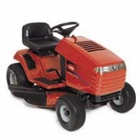
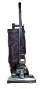
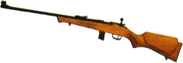
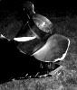

Cluff Rider Mower Terrorizes Neighborhood

When the Cluff family purchased their new riding lawn mower last month, they never would have imagined that in the hands of their 11 year twins, Dallas and Weston, it would be turned into a weapon. Diana Cluff, anxious mother of the twins, was hoping the mower would be put to good use--but she soon realized that the twins had other plans. "They think the riding mower is a hot rod and go so fast all over the yard, on the driveway, inches away from our 5 parked cars and down by the creek. I didn't know lawn mowers could go so fast, turn so sharp and mangle so easy." Under the guise of public service, the twins cunningly offer their free lawn care services to unsuspecting senior citizens in the area, but upon arrival, drive around like maniacs--whooping and hollering and prompting frantic phone calls to the authorities. Diana is at the end of her rope. "They even want to drive it on the Dead Indian (the unfortunately named road the Cluff's live on) but I told them they needed a license to do that and it ruined their day." Older brother Nial, 15, quietly predicts that the mower will "only last 6 months."
Twins Leave School--Never to Return
Dallas and Weston have, at long last, graduated from Bellview Elementary School--a feat that many considered impossible. All of the Twin's siblings and even their mother, Diana, have attended Bellview School. Diana started Bellview in the second grade in 1952 after moving from Walker school. Now the last of her nine children have graduated from the school--bringing a 50 year Cluff legacy to a close. The faculty and staff have planned a riotous party to celebrate!
Daisha & Natasha Finally Graduate
Better late then never. This spring Cluff sisters Daisha, 29, and Natasha, 31, have both finally earned their bachelors degrees. Daisha got her degree in Media Communications from Webster University's London campus (at Regent's College) in May while Natasha managed a double major in Psychology and Linguistics from the University of Washington in June. After years of blood, sweat and tears one might expect the girls to be thrilled that it's all at an end--but both are interested in pursuing postgraduate degrees...someday.
Dane & Karen's Desert Exodus
After just over a year in the sweltering heat of the Las Vegas desert, Dane & Karen Cluff have decide to move their family back to a more temperate climate. The Cluff Family was on a two week vacation in Southern Oregon and Northern California when Dane was offered a job on the Oregon coast with his Uncle Clayton. Only three hours away from Ashland (where Dane's parents reside), the Cluffs liked the location but were unsure about uprooting their children. The final decision was made when the Cluffs returned to Las Vegas at 1am to find that the temperature had only cooled down to 108° (120° during the day). The Cluffs are expected to be cooling off in the Coos bay/Coquille area by the end of the summer.
Mel vs. The Tornado
 Melanie Beal, whose family moved from Alabama to Georgia last month, was reportedly so tired after their weekend of moving that all she could think about was crawling into her comfortable bed to sleep. She'd just closed her eyes when a deafening siren woke her. Scott, Melanie's concerned husband, warned that a tornado was approaching but Melanie was so tired she said she'd rather die in her bed than get up and head for shelter. Luckily, the Tornado backed down and left her and her family untouched. Ministers from churches throughout the bible-belt are interested in Melanie's unique tornado-taming abilities and are desperate to televangelize her story to prepare believers for the upcoming hurricane season. She has politely refused all offers.
Melanie Beal, whose family moved from Alabama to Georgia last month, was reportedly so tired after their weekend of moving that all she could think about was crawling into her comfortable bed to sleep. She'd just closed her eyes when a deafening siren woke her. Scott, Melanie's concerned husband, warned that a tornado was approaching but Melanie was so tired she said she'd rather die in her bed than get up and head for shelter. Luckily, the Tornado backed down and left her and her family untouched. Ministers from churches throughout the bible-belt are interested in Melanie's unique tornado-taming abilities and are desperate to televangelize her story to prepare believers for the upcoming hurricane season. She has politely refused all offers.
Ammon: SkateBoi
Ammon Cluff, age 14, has taken skateboarding to a new level by adding six new tricks to his repertoire including: varial kick flips, hard flips, pop shove-its, heel flips, nose grabs and indys. Ammon has been perfecting his techniques at skate parks both in Vegas and Ashland (where he's staying with his grandparents for the summer). Ammon is also preparing for snowboarding season on the trampoline by practicing several tougher tricks on what he calls "a trampoline deck" (a skateboard without the wheels). With the help of the trampoline Ammon's been able to perform roast beefs, methods, kick flips to indys, 540° shove-its, mutes, stiffies and one-footed cannonballs. "I'm proud of Ammon though I can't understand a word the kid is saying," says Ammon's Grandma. "I mean, what's this nose grab and are they remembering to use a tissue? It's only a matter of time before this degenerate skater language takes over and everyone over the age of 17 is out of the loop. It's so disrespectful! I've already been told to pop shove-it twice this week!"
Cluff Boys Finally Flip
BREAKING NEWS! Dallas and Weston have finally learned to do back-flips on the trampoline--an accomplishment that entitles them to membership in the elite family flipping fraternity (whose only current members are Dane and Daisha). "I am really close to landing a backflip-180º," reports an ecstatic Weston. "Dall actually landed a backflip-360º! But he won't do it anymore because he always lands on the springs."
Pogo A Go-Go
Cage Cluff loves riding her bike and scooter but her new favorite is a pogo stick. Cage's current record is 17--she's trying to beat Natasha's ultimate pogo record of 29. Daisha is the current reining master of pogo with over 208 consecutive hops (2003).
Braden: Soccer Stud
Braden Cluff, age 10, has just finished a grueling soccer season where he played center and forward for his team "The Vegas Heatstrokes". "Braden did really well," says his proud mother, Karen. "But he had a secret weapon! He always wore his hair spiked or colored to distract and psych-out his opponents. He's well known at school for his wild hairdos now, even the principal greets him in the morning with, 'new hair again today Braden?'"
|
|
SHIRA TO WED!
In a surprise move this month, 18 year-old Shira Cluff, youngest daughter of Dennis and Diana, is to marry her 19 year-old high school sweetheart, Jeremy Cullen, in what promises to be a low-key ceremony at the Justice of the Peace in Ashland. The couple, who met at school and have been dating for nearly two years, have confirmed that they are keen to make their relationship legally binding but strenuously deny speculation that a pregnancy is the motive behind the quick, no-frills ceremony. "I'm not pregnant!" says Shira adamantly. "I'm just in love." Family reaction to the news is generally favorable, though some have expressed reservations about the couple's age. But Diana (who also got married at 18) is quick to defend the youngsters. "Shira walked at seven months and wanted to wear lipstick by the age of two," Diana says. "She has always done things early. She even graduated from high school one year early. Jeremy is very mature too. And we love him. He's quiet, cool, relaxed, a good listener and a ten in looks. He is the son of a doctor and is very loving to his mother and five siblings. He gets along great with our children as well. He's always playing chess with our boys. He's a fly fisherman, an avid hiker and pulls very white taffy--so he fits into our family very nicely." Shira, a 4.0 Dean's list student, has been an art major at Southern Oregon University for the past year. She sings, acts, dances and plays the piano. She's also interested in yoga, decorating, cooking, reading and swimming. She loves cats, cycling, keeping a clean room and her privacy. It's because she values her privacy that she's planned such a low-key wedding. "It's just a formality," Shira says. "I don't want to make a big deal out of it." After the wedding, the couple plan to move to Portland, where Jeremy is to attend College. The ceremony will take place on June 16th. There is no planned reception.
SHIRA GETS COLD FEET!
The Cluff/Cullen wedding planned for June 16th never happened! In a dramatic turn of events, fickle 18 year-old Shira Cluff has decided to call the wedding off--indefinitely. Shira says she and Jeremy have decided to take a break to reassess their relationship but is quick to point out that they are still in love and hope to be married in the future (punters are putting their money on at least six more changes of heart before the year is out). In the mean time Shira is moving to either Portland or Seattle to start anew. Spurned fiancé, 19 year old Jeremy Cullen, was unavailable for comment. So will she or won't she? Check in next month to get the latest update on the bizarre soap opera that is Shira's life.
Diana Accused of Abuse and Neglect--Again

Once again Diana Cluff, housewife and mother of ten, has been accused of abusing and neglecting her vacuum cleaner. But she's no stranger to these allegations, for years she's had to deal with being repeatedly implicated in the torture and mangling of small appliances. At least twice a year when she takes her vacuum in to the Kirby dealer for servicing, she ends up having a complaint filed against her followed by a stern lecture. "They refuse to let me pick up my vacuum without a warning! It makes me so mad. They are expensive vacuums, they should last." When asked how many times a week she uses her machine, Diana replies, "It depends, but probably three times a day--so 21." But even with this heavy usage, Diana can't understand why none of her vacuums have ever lasted more than one year. "They just don't make them like they used to" she says longingly. The Kirby man disagrees. "Our vacuums are built to last a lifetime. Heavy usage is not what's been destroying Mrs. Cluff's vacuums. I have clear evidence that multiple children have been using the forward motor casing as a seat in some sort of ride. And you wouldn't believe the stuff I've found clogging the intake duct! Things like pantyhose and Jell-O I can forgive--but that's just the beginning for a Cluff Kirby! Take the worst possible thing you can imagine your vacuum sucking up and magnify it by 100. Now you're getting close."
Karen is Revolted by Hairy Men
Karen Cluff, ambitious mother of five, has recently announced her desire to enroll in an adult education course. She was initially interested in a year-long massage therapy course near her Las Vegas home but has experienced reservations after hearing what her massage therapist sister-in-law, Daisha, has said about having to massage nasty men with hairy backs. Karen is now leaning heavily toward a Veterinary Assistant course. She says she's always wanted to go into the medical field and loves to work with animals, so it seems a safe bet. "If I have to massage hairy bodies," says Karen "I'd rather they be K9."
New Babies
On June 25th Tiana's Dogs, Cowboy and Indian, became first-time parents with the birth of their puppies; Eddie 1 (female) and Eddie 2 (male). As (bad) luck would have it, Hyrum and Tiana were at work when the pups were born--the one and only day they weren't with Cowboy and Indi since their purchase. Both puppies are red in color from a chocolate/rust mother and black/rust father (Indi's father and brother were red). In keeping with the Min Pin standard both babies have had their tails docked and dewclaws removed. Now they're running, playing, and even growling. Eddie 1 is promised to Hyrum's sister, Teresa, and Eddie 2 is being eyed by Tiana's nephew, Dakota.
Mom Sleeps Alone In a bizarre development, Diana, lover of comfort and convenience, has adopted sleeping outdoors
as her new favorite summertime activity. In the olden days Diana wouldn't be caught dead roughing
it in the open-air--she shunned tents and hammocks and always stuck to her motorhome. But in the
last couple of months she's decided to make up for lost time with a strict regime of outdoor sleeping.
She's acquired a mattress which she puts out on (and leaves out on) the front porch. Aside from being
an eyesore the mattress is also too big for the porch and hangs out over the hot tub (rendering it even
more useless than it already is (it hasn't held water for over a year). But mom is determined to sleep
out, even if it means sleeping alone because no one else is willing to brave the mosquitoes and spiders.
Mom has even remained steadfast through a recent thunderstorm. "She only realized she had been rained on
once she'd woken up in the morning," says an anonymous and thoroughly embarrassed offspring. "I think the
reason is because she slathers a massive amount of Vaseline over her face at night to prevent wrinkles.
It not only prevents wrinkles, it also forms a protective, waterproof barrier from the rain--a sort of
face-tent. It may keep off the rain but it isn't worth the sacrifice. Every time mom comes in the house
in the morning she has a vast collection of half-dead insects stuck to her face--mosquitoes legs
twitching as they sink to their deaths in her petroleum quicksand. It's all just so nasty and
trailer-trash!" But Diana remains un-phased and has vowed to continue sleeping outdoors until
she develops frostbite or the coyotes haul her off in a thousand little pieces.
But with Vaseline acting both as a thermal layer and a slippery coating (thereby
preventing canine grip) neither seems likely to happen in the near future.
In a bizarre development, Diana, lover of comfort and convenience, has adopted sleeping outdoors
as her new favorite summertime activity. In the olden days Diana wouldn't be caught dead roughing
it in the open-air--she shunned tents and hammocks and always stuck to her motorhome. But in the
last couple of months she's decided to make up for lost time with a strict regime of outdoor sleeping.
She's acquired a mattress which she puts out on (and leaves out on) the front porch. Aside from being
an eyesore the mattress is also too big for the porch and hangs out over the hot tub (rendering it even
more useless than it already is (it hasn't held water for over a year). But mom is determined to sleep
out, even if it means sleeping alone because no one else is willing to brave the mosquitoes and spiders.
Mom has even remained steadfast through a recent thunderstorm. "She only realized she had been rained on
once she'd woken up in the morning," says an anonymous and thoroughly embarrassed offspring. "I think the
reason is because she slathers a massive amount of Vaseline over her face at night to prevent wrinkles.
It not only prevents wrinkles, it also forms a protective, waterproof barrier from the rain--a sort of
face-tent. It may keep off the rain but it isn't worth the sacrifice. Every time mom comes in the house
in the morning she has a vast collection of half-dead insects stuck to her face--mosquitoes legs
twitching as they sink to their deaths in her petroleum quicksand. It's all just so nasty and
trailer-trash!" But Diana remains un-phased and has vowed to continue sleeping outdoors until
she develops frostbite or the coyotes haul her off in a thousand little pieces.
But with Vaseline acting both as a thermal layer and a slippery coating (thereby
preventing canine grip) neither seems likely to happen in the near future.
Nial Brandishes Firearms

Nial Cluff, 15, is a calm and trustworthy boy. His parents have always been proud of him and feel they can rely on him not to do anything stupid. So as a reward Nial has been entrusted with a key to the gun cabinet and access to the .22 rifle and handgun for target shooting and Boy Scouts. As of yet, there haven't been any incidents or injuries, but there has, however, been plenty of controversy. At least one sibling (who wishes to remain anonymous) disagrees with the decision to arm Nial. "He's already a deadly weapon now that he has his permit to drive! Why add guns to the mix?" But for now Nial's parents feel okay with his new-found gun-toting persona. "I think boys should learn how to shoot," says Nial's Mother (also mother to the twins!!!). They need shooting skills for practical things like hunting and protecting their families. I trust Nial. He's always been obedient and quiet. He'll be fine." But not everyone agrees. "My mom thinks that nothing bad will happen because Nial's quiet," says the anonymous Cluff. "But lets not forget that it's always the quiet ones that flip out and mow everyone down in the middle of Spanish or Global Studies--both of which, coincidentally, Nial flunked last semester. If he starts wearing a trench coat, I'm calling the police!"
Grades: The Good, The Bad & The Ugly
Final grades for this school year were a mixed bag. On one spectrum were the Good: Tasha, Daisha and Shira did well for themselves in University while Dane's kids (including honor students Kaylynn and Ammon) both of Melanie's kids, Tasha's daughter and Daisha's son did great last school year. Holding on by the skin of their teeth were Dallas and Weston who passed--but just barely. And on the other end of the spectrum was Nial, who actually managed to flunk two classes and land himself in a teenager's worst nightmare--Summer School. Better luck next year Ni!
Fourth of July Body Count
For the Cluffs the Fourth of July is generally a dangerous time fraught with pain and injury, but this year's celebration didn't involve a single amputation or death--setting a new all-time safety record. There were, however, a few small incidents (mostly involving the twins) which are outlined in the following accident and injury report:
July 3
The entire Cluff clan (with the exception of Melanie & Scott's family) descended upon the Ashland homestead--20 people in all (cramped sleeping quarters but 0 casualties).
July 4
AM: The day started with a traditional fighter jet fly-by over Main Street to kick off the annual Fourth of July parade. The parade finished without any major Cluff incidents or injuries (just one close call with a bagpiper). After the parade the Cluffs headed down to Lithia Park for the festivities then on to the band-shell for patriotic music and a traditional picnic (several neck injuries resulted when the teenage boys craned to see a topless girl going by).
PM: After the park the Cluffs headed home to deep-fry a turkey (no grease fire this year) then headed to a social gathering at the church where everyone played baseball, soccer or ultimate Frisbee (one skinned knee, one twisted ankle and one side stitch). The Cluffs ended the day with a double dose of fireworks, first City fireworks from the fields around the college under sleeping bags (Dennis nearly hit a group of teenager with his car) and then in the shop parking lot next to the house where (illegal) fireworks were set off with about 30 or so close friends and neighbors. No brushfires and only one 2nd degree burn resulted from this year's homespun firework show--a new safety record!
This year's increased safety was due, for the most part, to the fact that all matches were kept twenty feet away from the twins at all times. Next year the Cluffs are hoping to remain completely unscathed by sending the twins to summer camp for the duration of the festivities.
Niagara Falls Survives Cluff Downpour
This summer Dane & Karen Cluff and Tiana & Hyrum Johnson visited Niagara Falls. Both couples agreed that the Falls were beautiful but (in a shocking display of un-Americanism) admitted preferring the Canadian side. "The American side was all done in an old art-deco or fifties style," said Tiana "and it just seemed run-down. The Canadian side was much nicer." Dane and Karen also gravitated to Canada, even staying the night in a Canadian, rather than an American, hotel. A spokesman for the Canadian tourist board is delighted in the sudden surge of American interest in his country. "The Cluffs bumped our American tourism numbers up to 7 whole people this month! A commemorative plaque is going in next week--eh." But American boarder patrol officials aren't taking the matter lightly. "I'm baffled by the Cluffs apparent lack of patriotism," says a confounded patrolman. "Right now we have two independent red, white and blue committees probing the matter, but until they've reached their conclusions, I'm not able to comment any further.
Tiana & Hyrum Dump Truck
After two years of driving a big rig, Tiana and Hyrum have decided to stay put for a while. They've moved back to Oregon, purchase three acres of land and are getting ready to build. The decision to get off the truck was bittersweet. They loved spending so much time with each other but were getting antsy to finally lay down some roots. Their trucking years were full of adventures; they witnessed the space shuttle explosion, ran people off the road, were flashed by biker chicks, hit one deer, two foxes, a small flock of birds, 12 squirrels and billions of bugs, were solicited by prostitutes (lot lizards), drove through the rough parts of New York City (Bronx, Brooklyn and Queens) unscathed and bought min pins in S. Dakota and Idaho (and potty trained both on the truck). "I've been through 45 states and my favorite is still Oregon," says Tiana. "Oregon has the best weather and the most beautiful scenery! Other places with great scenery are North Carolina, West Virginia, Montana, Washington, California and the Smokey Mountains in Tennessee. But the West Coast is the most diverse with its mountains, deserts, forests, lakes and the ocean." Tiana and Hyrum visited Niagara Falls, spent a weekend in NYC, explored Houston TX. (where Hyrum served his mission), saw Amish people at a truck stop, Dorothy's house in Kansas and shooting stars almost every night. Though the sight-seeing aspect appealed to Tiana, it wasn't all a flatbed of roses. They narrowly escaped a tornado in Oklahoma, drove through several bad snowstorms, were victims of road rage, had to go to the emergency room when Hyrum fell off a flatbed trailer, narrowly missed being shot by the Beltway sniper in Baltimore, managed to get 3 tickets (parking, speeding, and left lane violation--all by Hyrum), survived 110º+ weather in southern Arizona and -20º in Minnesota (once we went from 20º to 100º all in one day), avoided several snow and traffic related accidents, and had several close encounters with vicious armadillos, alligators, Brazilian killer bees and cougars. But according to Tiana the toughest thing about being on a truck, aside from not having a house to decorate, is trying to keep in good shape. "It's difficult to get exercise when you have to sit down all day," says Tiana. "We tried using our laptop DVD to do Tae-Bo at rest areas until the strange looks got to be too humiliating." And what's the best thing about trucking? "Being able to spend 24 hours a day with the woman I love," says Hyrum "That, and XM radio."
Holy Holidays
This summer Dane and Karen visited church sites in Kirkland, Ohio and upstate New York while Dennis and Diana went to Missouri and Nauvoo. All enjoyed what they saw and were happy to have had the chance to go, but after a grueling schedule that included London, Norway, Seattle and Chicago, Dennis and Diana were sick of traveling. "Dad and I have decided to use the travel channel on TV from now on," says Diana. "It's much easier and we don't have to leave our American conveniences and superstores." In reaction, a spokesman from the European community had this to say; "Had they not arrived at the decision to become armchair travelers we probably would have had to take the unfortunate step of blocking any future entry into Europe. So it's all worked out for the best, really."
Nial Wears Women's Clothing
On a recent trip to the Lost Creek Lake, Nial Cluff, age 15, realized that he'd forgotten to bring his swimsuit. But because his mother, Diana, never goes anywhere without being prepared for every eventuality, Nial was provided with a substitute pair of trunks to wear. Unfortunately for Nial, the shorts he wound up wearing were pink, too tight, too short and made for pre-teen girls. The look, which might have been appreciated on a European beach, did not go down well in Oregon territory! Nial lasted just two minutes before he changed. He spent the rest of the day bogged down by his water-logged jeans which weighed in at over 25 lbs per leg. Now that's dedication to proving your manhood!
|
|
Naked Romp Turns 'Nasty'
Dennis and Diana, devoted parents of ten, have had a house-full of children for nearly 40 years. And for 40 years they've tortured their kids with perverted stories about what they'd do if they ever had the house to themselves. Much to everyone's chagrin, one of their favorite fantasies involved a naked-streaking-session. After marrying into the family and hearing about this for the first time, son-in-law Scott Beal responded, "That whole running through the house naked thing...I say if you got it, flaunt it"! But the majority of Cluffs disagree. "Eww, I don't want that mental image," says a nauseous, anonymous offspring. "But they'll probably die before all ten of us leave home anyway--so we may be spared!" But last week, in an apparent lapse of sanity, Tiana (their sixth child) and her husband Hyrum offered to take Dennis and Diana's three youngest on a camping weekend--thereby providing them with a chance to make good on their threats. So (dare we ask) what did they get up to? "It was hot to be alone," says Diana with a cringe-worthy wink "But we didn't actually run naked in the house as we always said we would. Our bodies are too nasty now and we're too old to run." So good news all round. The Cluff offspring can sleep another night.
Unlikely Resemblance Found
After seeing photos of Hyrum Johnson at the age of 12, several family members were struck by his uncanny resemblance to the twins. "It is so weird that the twins look so much like him, especially Dallas" says Diana, stunned mother of twins. Though Hyrum is only related through marriage, the twins resemblance to him is even greater than it is to their own blood brothers, Nial and Dane. Clearly shaken by this new revelation, Diana searches for the words to express her feelings. "We couldn't get over it" she explains "They could pass for his sons and Tiana says when they are with them they get comments to that effect." Numerous world leaders have expressed their profound condolences to Mr. Johnson.
Peeping Tom Moves into Neighborhood
In an unwelcome new development, it looks as though someone is building a two-story house across the creek from the Cluff family homestead. Diana, fiercely private Cluff matriarch, is disgusted. "I, for one, am disgusted! Our privacy is gone and we didn't even get a notice. It's just across from our BBQ fire-pit area and up at the same level of our house so they can look into our windows and see us running around in our underwear". Used to a two-acre neighbor buffer zone, the Cluff reaction may initially seem over-the-top, but is it really? On a recent welcome committee visit, committee members discovered that their new neighbors are in possession of a high powered telescope which seems to be aimed right at the Cluff's large living room picture windows--a shocking discovery that is only eclipsed by the revelation that the Cluff's seem to be "running around in their underwear".
Grandma Fights A Bloody Battle Last month Anna Hassell, avid traveler and loving Grandmother, opened the door to her motor home to find that it had been overrun by a gang of vicious mice. "All of my time has been wasted on scuttling mice out of my little motor home," says a shocked and disgusted Anna. "After over five years of being mouse-free and proof, somehow, they got in and in the last three months have feasted on nuts and coffee candy, made a beautiful soft nest of my terry cloth apron, then lined it with feathers from a feather duster (in my silverware drawer, UGH!)." Appalled, Anna immediately set to work trying to restore order. "Everything from the middle of the coach down to the floor has been removed, sterilized and washed. The only good thing is they were not able to climb up to my bed so I'm spared the job of washing and sterilizing it!" But Anna admits that the battle is still far from being over. "Now, I'm waiting for the little devils to be extinguished by the traps set for their demise - four so far, including one live one that was staring at me when I opened a drawer! After my mighty scream he got thrown out the door alive with the drawer's contents." Casualties have been high on both sides; the mice have lost four men while Anna (in addition to losing her terry cloth apron) now seems to have lost a drawer-full of her travel cutlery. The War of the Rodents continues. Check in next month for an update.
Last month Anna Hassell, avid traveler and loving Grandmother, opened the door to her motor home to find that it had been overrun by a gang of vicious mice. "All of my time has been wasted on scuttling mice out of my little motor home," says a shocked and disgusted Anna. "After over five years of being mouse-free and proof, somehow, they got in and in the last three months have feasted on nuts and coffee candy, made a beautiful soft nest of my terry cloth apron, then lined it with feathers from a feather duster (in my silverware drawer, UGH!)." Appalled, Anna immediately set to work trying to restore order. "Everything from the middle of the coach down to the floor has been removed, sterilized and washed. The only good thing is they were not able to climb up to my bed so I'm spared the job of washing and sterilizing it!" But Anna admits that the battle is still far from being over. "Now, I'm waiting for the little devils to be extinguished by the traps set for their demise - four so far, including one live one that was staring at me when I opened a drawer! After my mighty scream he got thrown out the door alive with the drawer's contents." Casualties have been high on both sides; the mice have lost four men while Anna (in addition to losing her terry cloth apron) now seems to have lost a drawer-full of her travel cutlery. The War of the Rodents continues. Check in next month for an update.
Dallas Wrecks Rider Mower
Dallas managed to bend the front wheel and axle on the rider lawnmower (as Nial predicted in the "Cluff Rider Mower Terrorizes Neighborhood" article - this edition) by running into a rock. The serviceman was stunned to learn that an 11 year old kid did the damage but was nice about it and allowed the warranty to cover the damage.
Nial's Fender Bender
Nial got in the way of a Pontiac Grand-Am as it was backing up and had his first car accident. Nial, 15, doesn't have a license and was driving under his provisional permit at the time. Not a great start to his driving career but the damage was minimal and the accident won't go on his record or affect his insurance.
Boating Accident
 Hyrum took the boat over a hidden shallow, rocky spot in Emigrant Lake and wrecked the prop and fin. It took two weeks to get fixed but is now back out on the lake for the remainder of the waterskiing season.
Indi Gets Run-Over
Indian, Tiana's dog, got hit by a car on Dead Indian Road (ironically enough) and survived with only cuts to the foot (no broken bones or internal injuries). Several days later she fell out of their moving pick-up, but only ended up with a temporary limp. So is she canine or is she feline? If she's the latter she's only got seven lives left.
Weston Gets Stung
After repeated warnings to keep his head inside the motorhome window on the latest coastal trip, Weston got what was coming to him--a bee flew right into his eye and stung him. His eye is still puffy but odds are he'll have his head out the window again next trip around.
Two Jokes
Knock knock!
Who's there?
Gorilla!
Gorilla who?
Gorilla your dreams!
Did you hear about the Indian who drank 15 cups of tea before bed-time? That night he drown in his tea-pee!
|

 This week, in what was thought to be a slip of the tongue (or so he says), the couple confessed to having had their first kiss on their second date!! A shocking revelation, considering 37 years of parental admonishment to: "save the first kiss for the altar". The news has sent ripples of horror through the Cluff community prompting a backlash of interjections and nasty adjectives including "hypocritical", "sanctimonious", "duplicitous" and worse. Only time will tell how much damage this revelation will incur, but for now the Cluffdaq (see business section) seems unlikely to recover.
This week, in what was thought to be a slip of the tongue (or so he says), the couple confessed to having had their first kiss on their second date!! A shocking revelation, considering 37 years of parental admonishment to: "save the first kiss for the altar". The news has sent ripples of horror through the Cluff community prompting a backlash of interjections and nasty adjectives including "hypocritical", "sanctimonious", "duplicitous" and worse. Only time will tell how much damage this revelation will incur, but for now the Cluffdaq (see business section) seems unlikely to recover.